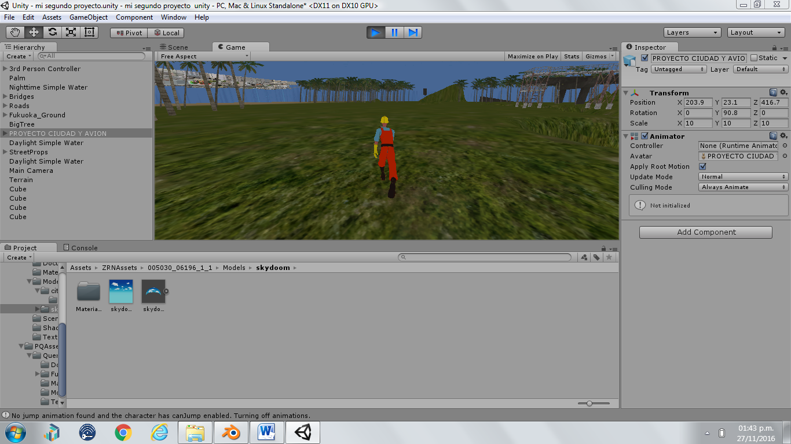

Metas y opiniones
- Lo que se planeo en unity era desarrollar nuestro propio videojuego mas complejo
- Con lo conocimientos anteriores de blender podriamos desarrollar algo con mayor calidad.
- Blender y unity van de la mano ya que es muy parecido pero unity es mas realista
- Unity tiene su propio simulador haci que pueder ver lo que creas y exporta en la tienda de unity diferentes objetos ya creados
Descripcion y caracteristas del proyecto
- El proyecto fue en crear una ciudad como blender pero mas realista utilizamos las dos cosas blender y unity .
- El proyecto final consistio en que hicieramos planos nosotros mismos y diseñaramos nuestros propios objetos y implementar la ciudad de blender.
- Lo mas dificil es aprender los comandos 